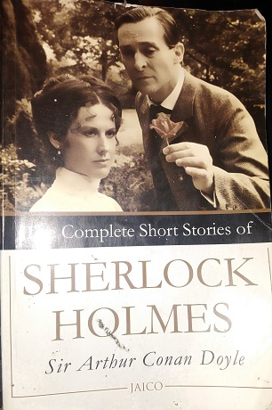
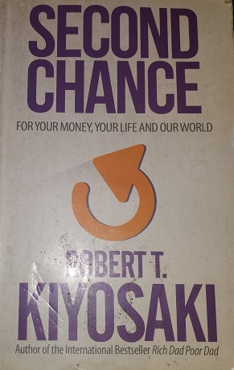

Whenever I want to clear and reascertain my goals, I read. Below are my most enticing novels:
-sir Arthur Conan Doyle
"The Complete Short Stories of Sherlock Holmes" offers readers a captivating journey into the brilliant mind of the world's most famous detective, Sherlock Holmes, as penned by the legendary Sir Arthur Conan Doyle. This collection comprises all 56 short stories featuring Holmes and his loyal companion, Dr. John Watson, as they tackle a wide array of baffling mysteries and crimes in Victorian London. Through Holmes's unparalleled deductive reasoning and Watson's insightful narration, readers are transported to the fog-shrouded streets of London, where they can immerse themselves in the thrill of solving intricate puzzles, encountering unforgettable characters, and witnessing the birth of modern detective fiction. This timeless compilation remains a literary treasure, showcasing Holmes's enduring popularity and his enduring appeal as an iconic figure in the world of detective literature.
-Robert Kiyosaki
"Second Chance" by Robert Kiyosaki is a thought-provoking financial guide that challenges conventional wisdom and encourages readers to rethink their approach to wealth-building and financial security. Drawing on his own experiences and insights, Kiyosaki delves into the lessons he learned from two influential father figures in his life, one representing the traditional "poor dad" mindset of job security and the other embodying the entrepreneurial "rich dad" perspective of financial education and investment. Through engaging anecdotes and practical advice, Kiyosaki explores the importance of financial education, asset acquisition, and the mindset shift necessary to navigate the complex world of money. This book offers readers a fresh perspective on financial success and empowers them to take control of their financial future, making it a compelling read for those seeking a second chance at achieving financial freedom and prosperity.